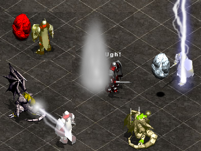

Note: For an app experience on phones and tablets, it is recommended that you add or install this website to your home screen with the latest version of Safari (on Apple devices) or Chrome (on Android devices). To play on a larger board, flip your phone to the horizontal orientation.
Create and play games on the Tactics Playground server.
Come hang out with TAO players. Discord is like a lobby where you can share game links, get jumped, and spectate games. You can even participate in tournaments.
Share a screen locally to play a friend offline using a classic formation.
3 Knights vs 3 Knights. See if you can take down the AI.
"Armies?", the general spits in disgust. "We were one army sent by his royal highness, Brutus Rageous. The dark circle sensed the presence of a dragon and we were sent to find and destroy it. Obviously, the magi are worthless against dragons. But now I wish they were here. I mean, it wasn't hard to find. Lightning does not usually strike the same place over and over again. You can see it over there. Obviously, it's a dragon egg, tough as a boulder like they all are. But it's like no egg we've ever encountered before. You named it well. We tried to destroy it, but a madness came over the men and they started attacking each other! Chaos where there used to be a well trained and orderly army. And the nightmares... a white dragon, quicker than any dragon I've ever seen. I never signed up to battle nightmares. See if you can get this sorry lot to work together and slay that beast 'cause I'm outta here.
SPOILER ALERT: Chaos is not completely random. Learn the mind of chaos
here for help on finding a winning strategy!
Chaos has only one purpose... to spread chaos. It does that by making sure everybody has the same level of strength. Therefor, it will change its color to match the losing team. If you attack the seed and you have the same color - it will either heal you (if possible) upon a block or attack the winning team upon a hit. If you attack the seed when it has a different color, it will either heal the losing team upon a block or attack YOU (whether you are winning or not). Also, the bots will prioritize attacking the seed anytime it matches their color. The dragon is less particular. It does change color to match the losing team (and won't attack it next turn), but it will indiscriminately attack anybody else. If you attack it while it has your color, it will get angry with you and immediately change color to the next losing team, and will never join your team again. Also keep in mind, that if your team dies, you will gain control over another team. So remember who your real enemy is. Good luck!
